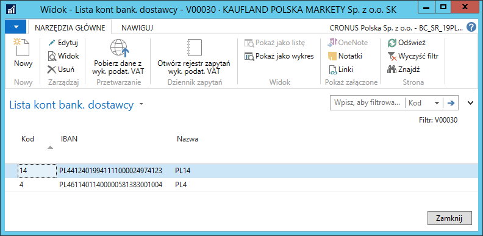

Aktualizacja kont bankowych
Informacje ogólne
W przypadku kontrahentów, dla których zdefiniowana jest już kartoteka dostawcy lub kartoteka nabywcy w systemie Microsoft Dynamics 365 Business Central on‑premises, z Wykazu podatników VAT można pobrać informację o jego zarejestrowanych rachunkach bankowych i na tej podstawie zaktualizować konta bankowe przypisane do kartoteki dostawcy/nabywcy lub założyć nowe.
Uwaga
Opis aktualizacji kont bankowych zamieszczony w dalszej części rozdziału bazuje na przykładzie kartoteki dostawcy. W kartotece nabywcy mechanizm jest identyczny, więc należy wzorować się na opisie dotyczącym kartoteki dostawcy.
Obsługa
W celu pobrania informacji o zarejestrowanych rachunkach bankowych dostawcy, należy wykonać następujące kroki:
Należy wybrać Działy > Zakup > Przetwarzanie zamówień > Dostawcy.
W oknie Dostawcy, które się otworzy, należy zaznaczyć wiersz z wybranym dostawcą, następnie na wstążce należy kliknąć Konta bankowe.
W oknie Lista kont bank. dostawcy, które się otworzy, należy na wstążce kliknąć Pobierz dane z wyk. podat. VAT.

Dane w oknie Lista kont bankowych wykazu podatników VAT, które się otworzy, należy wypełnić zgodnie z poniższym opisem:
Istniejący kod konta – w tym polu wyświetlony jest kod konta bankowego zdefiniowanego już w systemie dla danego kontrahenta, które rozpoznawane jest na podstawie numeru IBAN,
Nr konta bankowego (wykaz podatników VAT) – w tym polu znajduje się numer rachunku bankowego pobrany z wykazu podatników VAT,
Akcja – w wierszu z wybranym numerem rachunku bankowego, który ma być przypisany do kontrahenta w systemie, należy wybrać jedną z opcji:
Puste – dany rachunek bankowy nie zostanie przypisany do kartoteki kontrahenta w systemie lub konto nie zostanie zaktualizowane,
Utwórz nowe – dany rachunek bankowy zostanie przypisany do kartoteki kontrahenta w systemie (zostanie założone nowe konto bankowe dostawcy) – tę opcję można wybrać, jeśli pole Istniejący kod konta jest puste,
Zaktualizuj istniejące – informacje o danym rachunku bankowym zastąpią informacje w istniejącym w systemie koncie bankowym kontrahenta – tę opcję można wybrać, jeśli pole Istniejący kod konta nie jest puste.

Należy zaznaczyć wiersz z wybranym rachunkiem bankowym, dla którego zostało wypełnione pole Akcja, następnie na wstążce należy kliknąć Edycja.
W oknie Kartoteka konta bankowego – wykaz podatników VAT na karcie skróconej Dane aktualizujące wyświetlone są domyślne informacje o rachunku bankowym. W razie potrzeby należy ręcznie wprowadzić zmiany, a następnie kliknąć OK, aby zamknąć okno.
W razie potrzeby, czynności opisane w krokach 5. i 6. należy powtórzyć dla wszystkich rachunków z wypełnionym polem Akcja.

W oknie Lista kont bankowych wykazu podatników VAT na wstążce należy kliknąć Zaktualizuj konta bankowe dostawców.
W oknie komunikatu, które się wyświetli, należy kliknąć Tak.

- W komunikacie potwierdzającym utworzenie i/lub zaktualizowanie informacji o kontach bankowych dostawcy należy kliknąć OK.
W wyniku powyższych działań, lista kont bankowych zdefiniowanych dla wybranego dostawcy, została zaktualizowana: